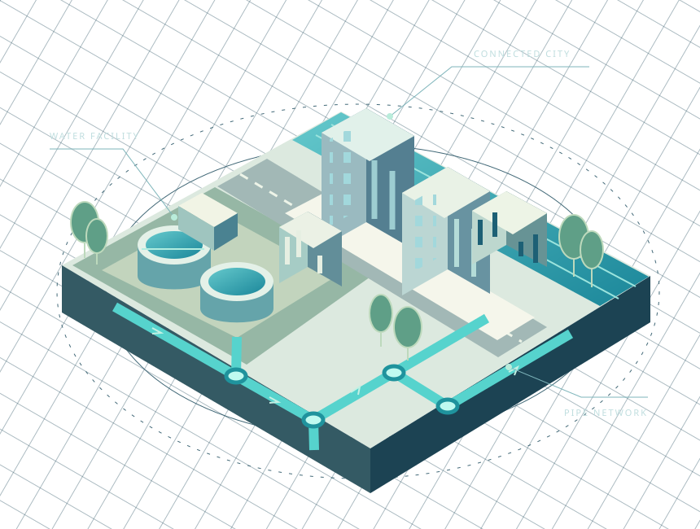
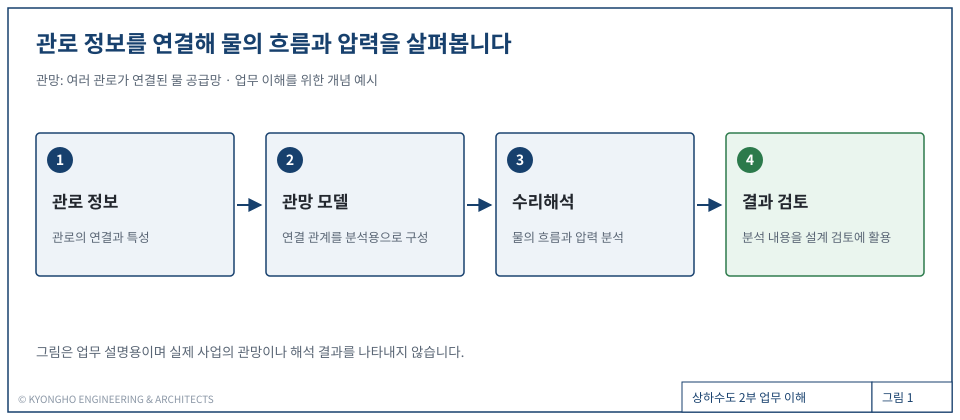

01 / DESIGN↗
관로·구조물 설계
상하수도 관로와 관련 토목구조물을 설계합니다. 시설의 형태와 연결을 도면으로 구체화하는 업무입니다.
상하수도 관로와 구조물 설계부터 기본계획,
관망관리와 수리해석까지.
상하수도 2부의 업무를 소개합니다.

상하수도 시설은 관로와 구조물, 그리고 그 안을 흐르는 물의 관계로 이해할 수 있습니다. 상하수도 2부는 관로·구조물 설계, 수도정비기본계획 등 기본계획 설계, 관망관리 및 수리해석 업무를 수행합니다.
계획의 방향, 시설의 형태, 관로의 연결, 물의 흐름.
서로 맞닿아 있는 업무를 분야별로 소개합니다.
상하수도 관로와 관련 토목구조물을 설계합니다. 시설의 형태와 연결을 도면으로 구체화하는 업무입니다.
수도정비기본계획 등 기본계획을 다룹니다. 시설 정비와 공급 체계의 큰 방향을 계획하는 업무입니다.
여러 관로가 연결된 물 공급망을 다룹니다. 개별 관로뿐 아니라 연결된 전체 체계를 살펴보는 업무입니다.
관망 안에서 물이 어떻게 흐르고 어떤 압력이 나타나는지 분석합니다. 해석 내용을 설계 검토에 활용합니다.
수리해석은 물의 움직임을 계산해 살펴보는 일입니다. 관로가 어떻게 연결되어 있는지 모델로 표현하고, 물의 흐름과 압력을 분석합니다.
그림을 좌우로 밀어 전체 흐름을 볼 수 있습니다.

설계 내용을 구체화하고, 수량을 정리하고,
물의 흐름을 분석하는 업무를 반복합니다.
관로를 설계하고 필요한 수량을 항목별로 정리합니다. 수량집계표는 설계에 필요한 수량을 한곳에 모아 확인하는 표입니다.
관망의 물 흐름과 압력을 분석합니다. 관로의 연결을 바탕으로 해석하고, 결과를 살펴 설계 검토에 필요한 내용을 정리합니다.
관로는 물이 지나가는 관의 길이고, 관망은 여러 관로가 서로 연결된 전체 망을 뜻합니다.
물의 흐름과 압력 등을 분석합니다. 여기서 ‘수리’는 고친다는 뜻이 아니라 물의 운동과 성질을 다룬다는 뜻입니다.
설계에 필요한 수량을 항목별로 모아 정리한 표입니다. 모든 공정의 세부내용과 사업비를 산정하는 핵심 자료입니다.
세부 설계를 진행하기 전에 시설 정비와 공급 체계의 큰 방향을 정리하는 계획입니다. 수도정비기본계획 등이 해당합니다.
관로·구조물 설계 · 기본계획 · 관망관리 · 수리해석